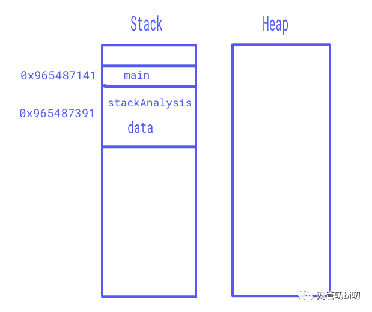
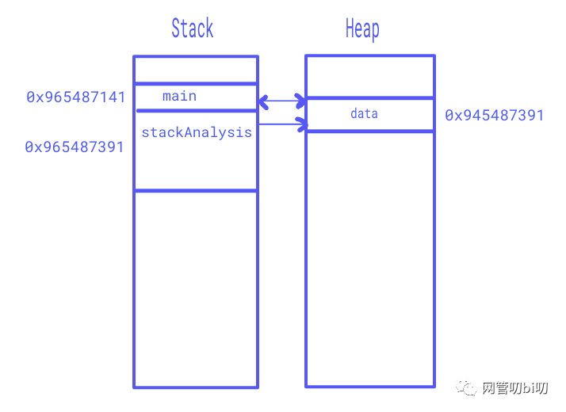

Go内存管理之代码的逃逸分析
Go 内存管理之代码的逃逸分析
基本上，每种编程语言都有其自己的内存模型。每个变量，常量都存储在内存的某个物理位置上，这些存储位置通过内存指针访问。
至于变量，就是程序里赋予内存存储位置的名称。程序可以根据需要进行操作，并且可以将新值分配给相同的内存存储位置。而常量也是赋予内存存储位置的名称，但是程序不能将新值分配给相同的存储位置（意思就是常量是恒定值，不能被重新赋值）。
我们都知道，程序运行时使用的内存被分为两个区：堆和栈。那么如何得知变量是分配在栈（stack）上还是堆（heap）上呢？对于手动管理内存的语言，比如 C/C++，使用 malloc 或者 new 申请的变量会被分配到堆上。但是 Go 并不是这样，虽然 Go 语言里面也有 new。
在 Go 官网的 FAQ 上有一个关于变量分配的问题如下：
Q：如何得知变量是分配在栈（stack）上还是堆（heap）上？
A: 准确地说，你并不需要知道。Golang 中的变量只要被引用就一直会存活，存储在堆上还是栈上由内部实现决定而和具体的语法没有关系。知道变量的存储位置确实对程序的效率有帮助。如果可能，Golang 编译器会将函数的局部变量分配到函数栈帧（stack frame）上。然而，如果编译器不能确保变量在函数 return 之后不再被引用，编译器就会将变量分配到堆上。而且，如果一个局部变量非常大，那么它也应该被分配到堆上而不是栈上。当前情况下，如果一个变量被取地址，那么它就有可能被分配到堆上。然而，还要对这些变量做逃逸分析，如果函数 return 之后，变量不再被引用，则将其分配到栈上。
Go 编译器决定变量应该分配到什么地方时会进行逃逸分析。
逃逸分析指的是：Go 编译器会跨越函数和包的边界进行全局的逃逸分析。它会检查是否需要在堆上为一个变量分配内存，还是说可以在栈本身的内存里对其进行管理。
我们可以使用 go 命令工具的-gcflags="-m"选项观察逃逸分析的结果以及 GC 工具链的内联决策，内联是一种手动或编译器优化，用于将简短函数的调用替换为函数体本身。这么做的原因是它可以消除函数调用本身的开销，也使得编译器能更高效地执行其他的优化策略。我们可以显示地在函数定义前面加一行特殊的注释让编译器不对函数进行内联（看下面的例子）。
接下来我们通过两个例子观察一下 Go 编译器对程序进行的逃逸分析。
package main import "fmt" func main() { fmt.Println("Called stackAnalysis", stackAnalysis()) } //go:noinline func stackAnalysis() int { data := 55 return data }
在上面的 main 函数中，我们对 stackAnalysis 进行了一个简单的函数调用，函数 stackAnalysis 返回 int 值。通过命令观察一下它的逃逸分析：
go build -gcflags "-m -l" ./scratch.go:4:14: "Called stackAnalysis" escapes to heap ./scratch.go:4:51: stackAnalysis() escapes to heap ./scratch.go:4:13: main ... argument does not escape
编译器的逃逸分析告诉我们：
- 第 4 行 14 个字符处的字符串标量"Called stackAnalysis"逃逸到堆上。
- 第 4 行 51 个字符串的函数调用 stackAnalysis()逃逸到了堆上。
"escapes to heap"的意思是变量需要在函数栈之间共享，上面的例子就是在 main 和 fmt.Println 之间共享。

如上图所示，main 和 stackAnalysis 函数分配在一个栈上。由于函数具有自己的变量，因此也会将变量分配到栈的某个地方。当函数返回时，与该函数关联的所有变量也会从内存中删除。
接下来再看第二个例子：
package main import "fmt" func main() { fmt.Println("Called heapAnalysis", heapAnalysis()) } //go:noinline func heapAnalysis() *int { data := 55 return &data }
在上面的主函数中，我们对 heapAnalysis 进行了一个简单的函数调用，并且函数 heapAnalysis 返回* int 类型的指针。下面是对这段代码的逃逸分析结果：
./scratch.go:9:9: &data escapes to heap ./scratch.go:8:2: moved to heap: data ./scratch.go:4:14: "Called heapAnalysis" escapes to heap ./scratch.go:4:49: heapAnalysis() escapes to heap ./scratch.go:4:13: main ... argument does not escape
当函数 heapAnalysis 返回* int 类型的指针变量后， 会在 main 函数中使用该指针变量，因为是在 heapAnalysis 函数外部访问，变量必须被移动到堆上。

如上图所示，main 和 heapAnalysis 函数分配在一个栈上。由于函数具有自己的变量，因此也会将变量分配到栈的某个地方。但是编译器检查到该值是返回了它的指针，并且已用于另一个函数，因此变量被移到了堆中，主函数会从堆中访问该变量。
简单来说，逃逸分析也是了解我们应该如何优化应用程序性能的一种方式。通过上面的分析可以看出来，虽然指针能够减少变量在函数间传递时的数据值拷贝问题，但是也不应该所有类型的数据都应该返回其指针。如果分配到堆上的共享变量太多的话也无形中增加了 GC 的压力。